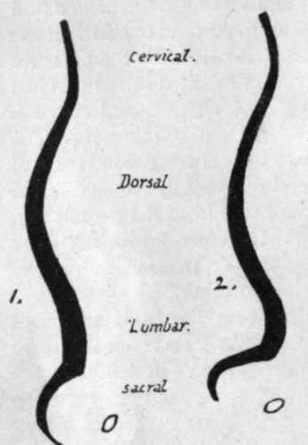

Regions Of The Column. Continued
Description
This section is from the book "The Anatomy Of The Human Skeleton", by J. Ernest Frazer. Also available from Amazon: The anatomy of the human skeleton.
Regions Of The Column. Continued
The greater depth of the fronts of the lumbar bodies in Europeans is really confined to the lower two or three members of the series. In lower races the bodies, except the last, are shallower in front.
The curves of the column become more accentuated up to puberty, and the dorsal curve appears to increase somewhat in length and depth after general growth has ceased.
The most anterior part of the cervical convexity is the front of the body of the fourth cervical vertebra, and the curve ends below about the second dorsal : the body of the seventh or eighth dorsal usually forms the point of greatest posterior projection in the dorsal curve, which ends usually below the first lumbar vertebra.
Compare male and female columns, and observe that the sacrum in the woman is turned back to a greater extent. This would make a more prominent lumbo-sacral angle, but it is modified by the lumbar curve becoming more pronounced : thus in women the fourth lumbar is usually more prominent forward than in men.
The presence of curves in the column above the sacrum adds to its elasticity.
while the number of curves gives it a higher resistance to weight than would be afforded by a single curve ; weight is transmitted to the top of the sacrum and from thence to the innominate bones, so that the sacral curve is merely an adaptation to the contents of the pelvis, not concerned in weight-transmission, and differs in the sexes.
A slight lateral curve is sometimes seen in the line of bodies, concave to the left in the dorsal region and probably due to use of the right arm, with some compensatory deviation above and below.
The line of the spines shows frequent irregularities without any deviation in the line of the weight-bearing bodies.
On each side of the line of spines the vertebral groove runs down the length of the column, floored by the laminae and backs of the articular and transverse processes : it is occupied by the deep and intermediate layers of the post-vertebral muscles, the superficial mass lying on these and extending further out.
Observe the width of the transverse processes. More or less regular in the cervica 1 region, but great in the first and last members of the series, it decreases from above down in the dorsal vertebrae, and increases again in the lumbar to the third or fourth.
The number of vertebra; permits a considerable amount of movement in the complete column without calling for more than a very small amount between the individual segments, thus avoiding the weakening that would result if the segments were fewer and longer. The mechanical stability of the column under all normal movements is assured by making the axis of rotation pass through the bodies and not through the arches, so that the bodies are not displaced from one another in movement. To this end the discs join the bodies together, and the thicker the disc the greater the amount of movement between the bodies. Thus~we find that the discs are thickest in the lumbar and cervical regions, where movement is freest, and shallow in the dorsal series, where naturally the amount of motion is much restricted.
Where the strong and more flexible lumbar column joins the weaker and more restricted dorsal spine, i.e., about the dorso-lumbar region, is the weakest part of the column surgically. In addition to the discs, the bodies are attached to each other and to the discs by the anterior common ligament, a strong band increasing in width and thickness from above downwards and fastened to the lips of the bodies and the front surfaces of the discs. The posterior common ligament is attached in the same way to the back aspects of the bodies and discs, but is a much weaker and narrower band that decreases in size from above but widens opposite each disc, consequently having a denticulated appearance.
On the sides of the bodies are other lateral bands or sheets of fibrous tissue, thinner than the anterior ligament, and connected with the attachment of muscles to the column. Thus the whole series of bodies may be said to form a flexible column with the discs, ensheathed in a fibrous covering ; the fibrous sheath does not interfere with movements, being on the discs, but adds to the strength of the whole.
Fig. 10.-Schemes to show the differences between (i) male and (2) female curves. Observe the relatively greater prominence forward of the fourth lumbar segment in the female column.
It is evident that a forward bending of a part of the column will lead to separation between the corresponding lamina; and spines, and thus we find that the lamina; are connected with those above and below by interlaminar ligaments (ligamenta subflava) composed of almost pure elastic tissue ; these are prolonged back between the spines as intcrspinous ligaments, best developed in the lumbar region and only represented higher up by a fibrous or areolar web that makes markings on the bones. At the top of the column, where the movements of the head demand a greater range of motion between the first two vertebrae and the skull, the interlaminar ligaments become modified and represented by thickened areolar tissue : in this case the functions of ligaments are performed by the short muscles that connect the top of the column and the skull. The interspinous ligaments below the level of the 2nd c.v. may be looked on as simply the thickened areolar sheaths of the interspinous muscles, which also act as extensible ligaments limiting the excursus of the spines.
In the same way the separation of the transverse processes in lateral flexion of the column is met by intertransverse muscles modified partly into tendinous fibres ; but true intertransverse ligaments other than these are not easily found, save in a part of the dorsal region in which some fibres of the costo-transverse series appear to be also in part intertransverse.
Looking again at the back of the column, it is seen that the imbricated laminae and spines hide the contained spinal canal to such an extent that it is usually only possible to see into it easily in the lower two or three lumbar intervals. It is evident, therefore, that here the ligamenta subflava are most visible, completing the covering of the canal, and this region is chosen of necessity for the operation of inserting a needle into the membranes of the cord to draw off cerebrospinal fluid : the proceeding is helped by forward flexion of the spine, which is a movement most easily carried out in this region.
The movements between the parts of the different vertebrae may be shortly summed up : the bodies, being in and round the centre of motion, move least, and the various processes move more, in proportion as they are far away from the body in the plane of the particular movement.
The spinal cord and its membranes, lying deep to the neural arch which moves away from or to its neighbours in flexion or extension, obtains the utmost possible amount of freedom from movement by having no attachment to the arches but being held to the back of the column of bodies, both by the irregular and slight adhesion of the dura mater to the posterior common ligament and by the attachment of its nerves to the pedicles and discs through their sheaths of dura mater.
Continue to: